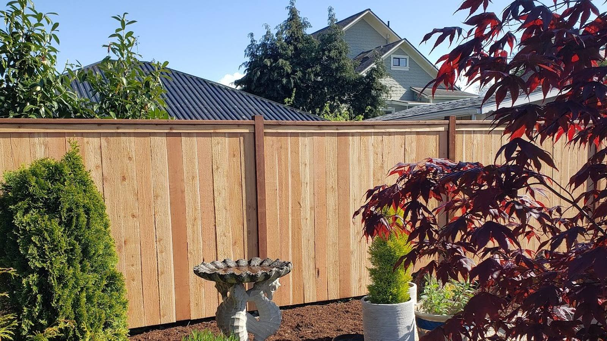
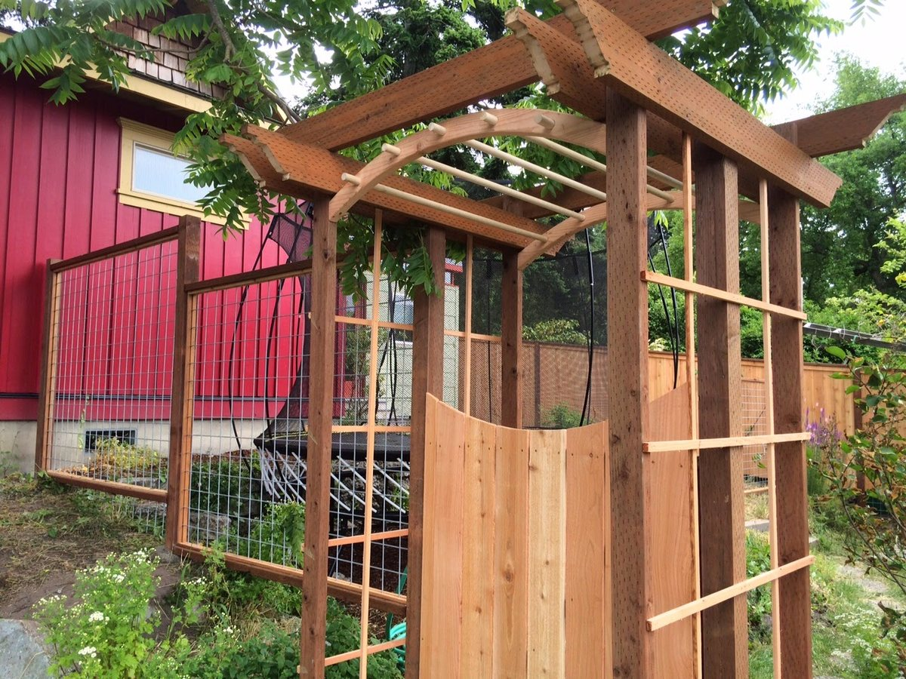

Cedar & wood privacy fences
Western red cedar board-on-board and privacy fencing with clean, even cap rails — the warm, solid look you see on our homepage, built to hold up to Northwest weather.
Our signature
Cedar privacy fences, chain-link, vinyl and ornamental aluminum — plus custom walk, drive and automatic gates most fence crews around here won't touch. Clean, solid work across the peninsula.
Every yard and budget on the peninsula is different, so we install in all the common materials and stand behind the work. Tell us the look you're after and what the fence needs to do, and we'll point you to the right one.
Western red cedar board-on-board and privacy fencing with clean, even cap rails — the warm, solid look you see on our homepage, built to hold up to Northwest weather.
Our signaturePractical, budget-friendly chain-link for yards, pets, gardens and property lines — including runs paired with an auto-opening gate, the way we built one for a recent Port Townsend customer.
Low-maintenance vinyl privacy, picket and ranch-rail that shrugs off coastal damp and sun — no painting or staining, season after season.
Sleek powder-coated aluminum fencing and matching gates that dress up an entry, garden or view lot — rust-free and see-through, without the upkeep of iron.
Wire-and-cedar garden fencing, trellis and custom arbors to keep the deer out and dress up the yard — the kind of one-off carpentry you can see in our project below.
Walk gates, wide drive gates and automatic gate openers built to match your fence and swing true for years — plus service when the electronics need it. More on this below.

This is what sets us apart on the peninsula. A lot of fence companies will run you a straight line of pickets and call it a day — we build the gates that go with it, including automatic drive gates and electronic openers, and we come back to make them right.
From long cedar privacy runs to chain-link with an auto-opening gate, we work all over Port Townsend and East Jefferson County. Here's the range — call and we'll talk through what we've built closest to you.
Cedar board-on-board, vinyl and chain-link — from backyard privacy to whole-property lines that stay straight and solid.
Walk gates, wide drive gates and automatic openers — built to match the fence, swing true, and keep working after our coastal storms.
Deer and garden fencing, trellis and one-off cedar arbors — the kind of custom work you don't get from a panel-only crew.
Want to see something closer to your project — a cedar privacy run, a chain-link line with an automatic gate, or ornamental aluminum? Call (360) 385-9566 and we'll walk you through it.
A fence and gate is a big-ticket job, and you want it done right the first time — and backed up if something goes wrong. Here's what you get when Pro-Link Fence handles it.
Even cap rails, true lines, gates that swing straight and latch right — the finish work other crews skip.
Drive gates and automatic openers most fence crews send out — we build and service them ourselves.
Cedar, chain-link, vinyl or aluminum — one crew for whichever fits your yard, budget and view.
When a storm surge knocked out a customer's gate electronics, we returned and made it right. That's the standard.
Based in Port Townsend and working Port Hadlock, Chimacum, Port Ludlow and out toward Sequim — we know the soil and the weather.
A 4.7 rating across 13 Google reviews — the kind of word-of-mouth a small local crew lives on.
No mystery, no run-around. Here's how a fence or gate project goes with us.
Tell us what you're picturing — material, where it goes, and whether you want a gate or an automatic opener.
We come out, measure, walk the line with you and give you a clear, honest price. No surprises later.
Posts set right, panels and gates hung true, the site left tidy when we're done — cedar, chain-link, vinyl or aluminum.
Gate not latching right, opener acting up after a storm? We come back and make it right.
A 4.7 rating across 13 reviews on Google — here are a couple, in their own words.
“Marty and his crew did an excellent job installing our new chain-link fence and auto-opening gate.”
“Marty and his team built an incredible fence and gate, and when a power surge in a storm fried the electronics… they came back and took care of it.”
Tell us what you're after — a cedar privacy run, a chain-link line with an automatic gate, ornamental aluminum, or a repair. We'll come measure and give you a straight, honest price.